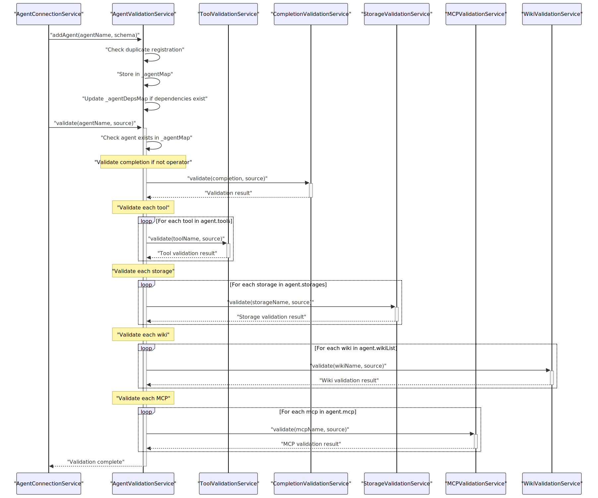

Validation Services form a critical layer in the agent-swarm-kit framework responsible for ensuring data integrity, schema compliance, and proper configuration validation across all system components. These services validate agent configurations, tool definitions, completion schemas, storage configurations, and their interdependencies before they are used in the system.
This document covers the validation service layer's architecture, core validation services, and integration patterns. For information about schema definition and registration, see Schema Services. For details about service instantiation and lifecycle management, see Connection Services.
The validation services operate as a coordinated layer that ensures system integrity through comprehensive validation of all registered components and their relationships.

The validation layer consists of specialized services that validate different aspects of the system:
| Service | Purpose | Validates |
|---|---|---|
AgentValidationService |
Agent configuration validation | Agent schemas, dependencies, resource associations |
ToolValidationService |
Tool definition validation | Tool schemas, function signatures, validation logic |
CompletionValidationService |
Completion schema validation | Completion configurations, getCompletion functions |
StorageValidationService |
Storage configuration validation | Storage schemas, embedding references, indexing |
StateValidationService |
State schema validation | State configurations, middleware chains |
WikiValidationService |
Wiki configuration validation | Wiki schemas and references |
MCPValidationService |
MCP protocol validation | MCP configurations and protocol compliance |
The AgentValidationService serves as the central coordinator for agent validation, managing agent registrations and their complex interdependencies.

The AgentValidationService maintains internal maps to track agent configurations and provides memoized methods for efficient resource lookups:

Validation services work closely with schema services to ensure that all registered schemas meet structural and functional requirements.

The validation services implement consistent error handling patterns that provide detailed context for debugging and system administration.
Validation errors follow a standardized format that includes:
agent-swarm [component] schema validation failed)agentName, source)Example validation checks from AgentSchemaService:
// String validation with context
if (typeof agentSchema.agentName !== "string") {
throw new Error(
`agent-swarm agent schema validation failed: missing agentName`
);
}
// Array uniqueness validation
if (agentSchema.tools &&
agentSchema.tools.length !== new Set(agentSchema.tools).size) {
throw new Error(
`agent-swarm agent schema validation failed: found duplicate tools for agentName=${agentSchema.agentName} tools=[${agentSchema.tools}]`
);
}
Validation services are actively used during runtime operations to ensure system integrity. The framework validates agent permissions before allowing access to resources.
Test cases demonstrate the validation enforcement in action:

Validation services use memoization extensively to optimize repeated validation checks, particularly important for resource association queries that may be called frequently during agent execution.
The memoize decorator from functools-kit is applied to methods like:
hasStorage() - memoized by ${agentName}-${storageName}hasState() - memoized by ${agentName}-${stateName}hasDependency() - memoized by ${targetAgentName}-${depAgentName}validate() - memoized by agentName